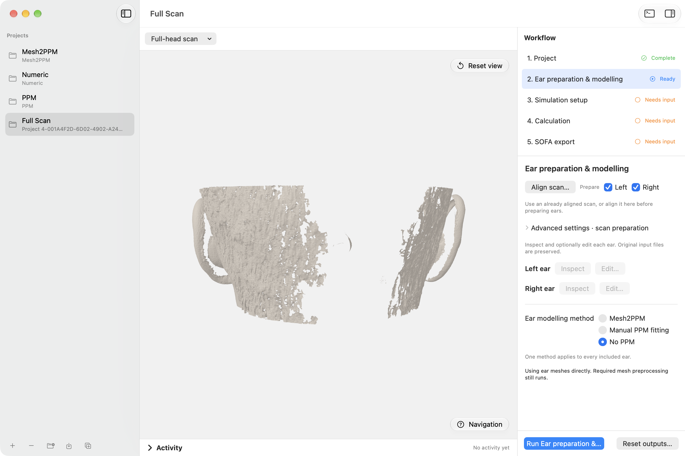
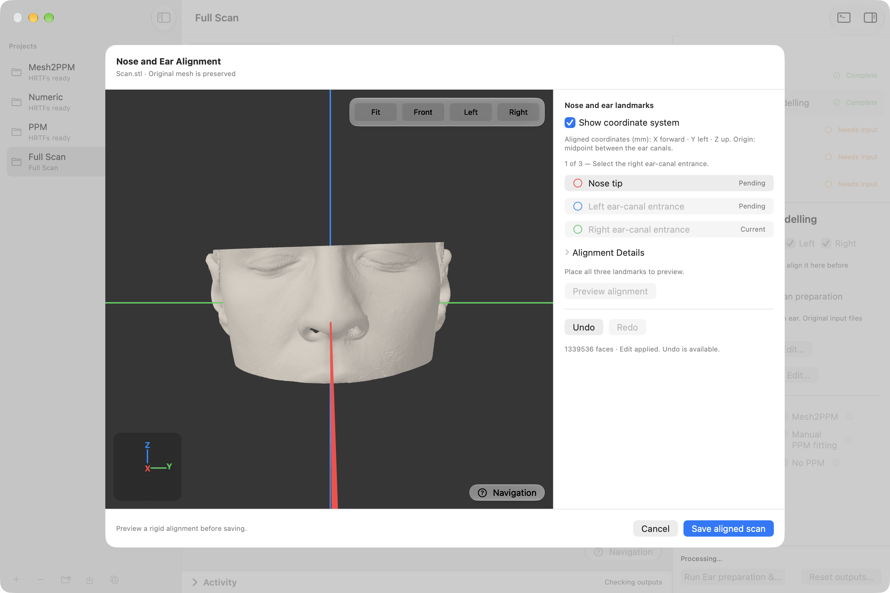
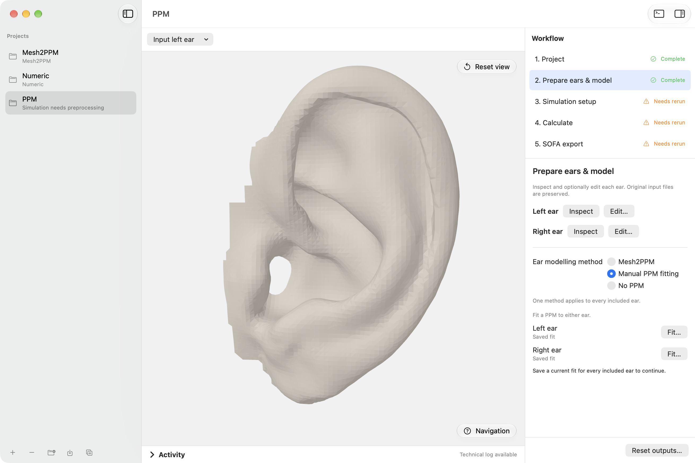
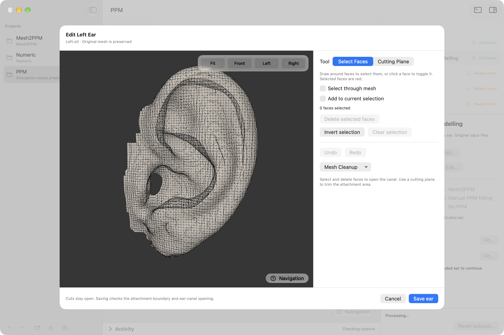
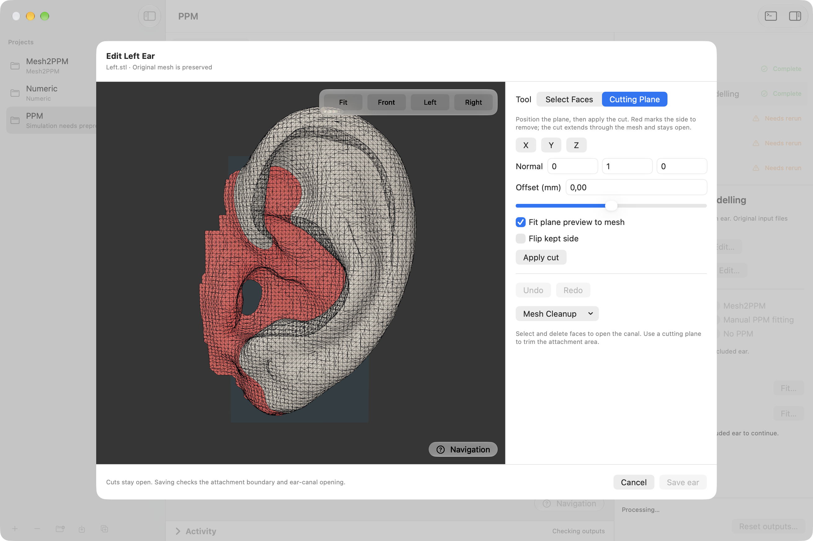

Preparing ears from a head scan
If you have a full-head scan instead of separate ear meshes, the app can align it, cut out the ears, and let you clean them up before simulation.
Written for version 2.0. The current download is v1.1.0, so a few things may look different in your copy.


1. Align the scan
Before preparing ears, use Align scan… to select these points in order: nose tip, left ear-canal entrance, right ear-canal entrance. “Left” and “right” refer to the person in the scan. Preview the alignment and save a separate aligned copy.
The three landmarks define the horizontal plane. The aligned frame uses X toward the nose, Y toward the person’s left, and Z upward, with the ear midpoint at the origin. This reference is not the Frankfort plane. If your scan is already aligned outside the app, you can skip this step.



2. Prepare and inspect the ears
- Choose the scan and set its crop rotation. Nose-and-ear alignment in the app sets this to zero. For scans aligned elsewhere, verify orientation; a Z rotation of 90 or 270 degrees may be needed.
- Select left, right, or both ears with the checkboxes beside Align scan, then run Scan Preparation. Changing the selection does not require a new alignment.
- Inspect each prepared mesh in Preview. The default crop polygon and margins are calibrated for edited, aligned scans; they do not automatically locate the ear. Check the crop placement for every scan.
How preparation processes and validates the mesh
Preparation crops the pinna region, cleans the mesh, performs 0.75 mm isotropic remeshing (six iterations, capped at 150,000 faces), reconstructs it with Screened Poisson (depth 7, one worker), restores the attachment boundary, and closes residual holes. A prepared ear is validated for one connected surface, consistent winding, finite coordinates, positive volume, and exactly one simple open attachment boundary.
The prepared ears are exported in the crop frame: left toward +Y and right toward −Y. Original scans are preserved. The project retains the validated ear STL files and a provenance report in Prepared/; intermediate geometry is temporary.


3. Review and edit
Open Edit Left Ear… or Edit Right Ear… from the prepared mesh preview. The editor offers two tools:
Select faces
Draw a closed lasso or click individual faces. The selection turns red; inspect it from another angle before choosing Delete Selected Faces. By default only visible surfaces are selected. Enable Select through mesh to include hidden faces, or Add to current selection to build a selection in several passes. Use Invert Selection or Clear Selection to revise it.


Preview a cutting plane
Choose Cutting Plane, then an X, Y, or Z preset, or enter an arbitrary normal. Adjust the offset and kept side. The cyan rectangle shows the plane; red marks the part to remove. The preview automatically fits the cross-section. You can also set the width and height of the preview rectangle.
Position the plane to preserve the pinna and the intended attachment boundary. Choose Apply cut to inspect the result; use Undo if it removes anatomy you need.


Use Mesh Cleanup → Keep Largest Component to remove disconnected fragments from the working copy. Save Ear validates and saves the result. The editor requires a connected, manifold surface with consistent winding, one simple attachment boundary, and at most one canal opening. Cuts stay open; preprocessing later closes the canal and estimates the source landmark.
Saved edits and their provenance are stored in MeshEdits/; the original scan and automatically prepared meshes remain unchanged. Require ear review before continuing is an optional pause and is off by default. Reset Outputs keeps saved edits, alignments, and PPM fits.
Automate scan preparation
For command-line runs, set the scan path, rotation, and prepared sides in the YAML file. Use null for an unused paths.left_ear or paths.right_ear; the prepared ears are used as inputs automatically.
scan_preparation:
enabled: true
scan_path: /path/to/edited-head.stl
rotation_degrees: 0
prepare_left: true
prepare_right: true
target_edge_mm: 0.75
require_manual_review: false
reviewed_left: null
reviewed_right: nulluv run Pinna2HRTF scan-preparation --config pinna2hrtf.yaml
uv run Pinna2HRTF run-config --config pinna2hrtf.yaml --stage allThe app and CLI reuse a valid preparation when its source and settings are unchanged. Changed scans or preparation settings require a new preparation. Saved ear edits are tied to the prepared mesh, so changing an edit invalidates later inference and simulation results. See the CLI guide for installation and the full pipeline configuration.